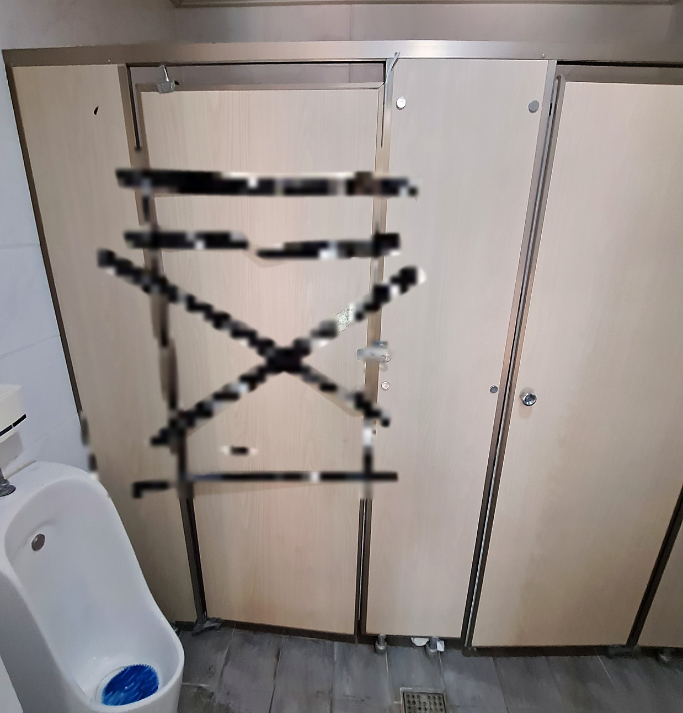
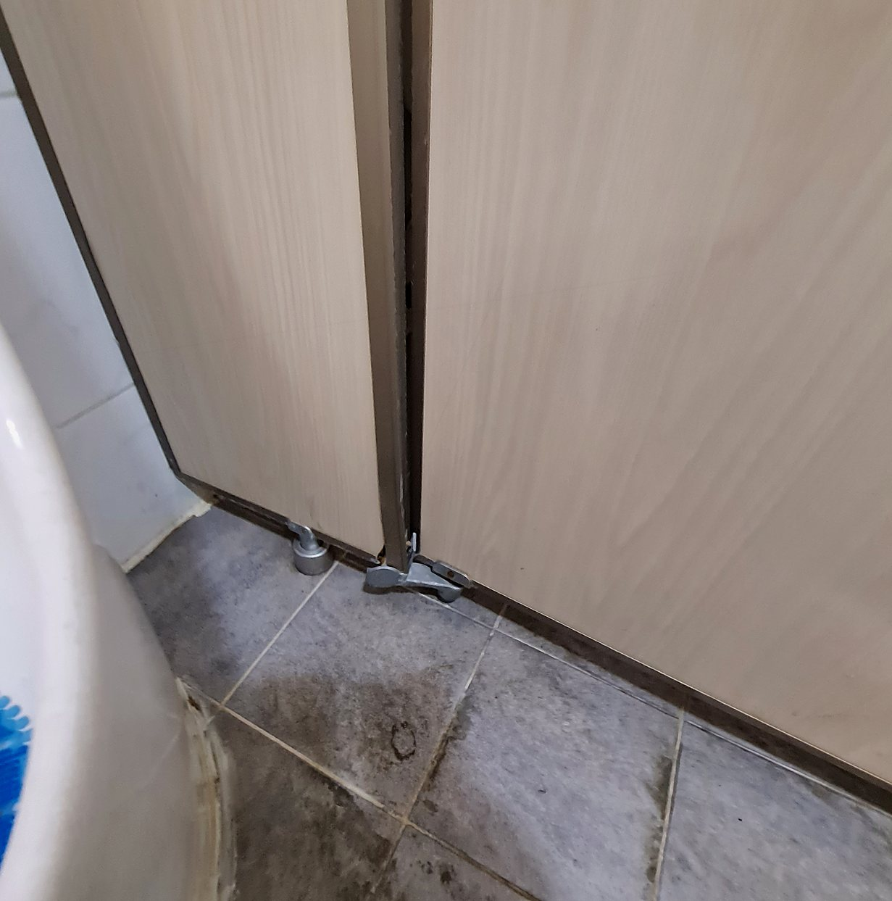
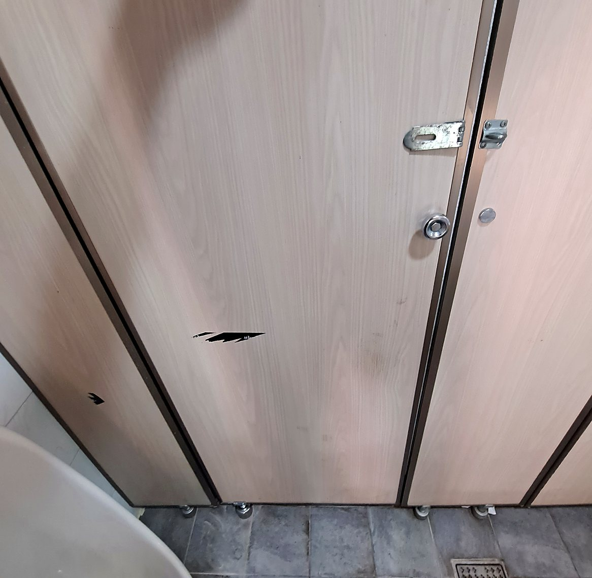

홈 › 시공 사례 › 수원 인계동 큐비클 화장실문경첩 파손 수리
수원 인계동 큐비클 화장실문경첩 파손 수리 — 문짝 교체 없이 힌지 추가로 여닫힘 복구



큐비클 문이 안 열리고 안 닫힌다고 문짝을 바꿀 필요는 없습니다. 문이 멀쩡하면 문을 잡아 주는 경첩만 다시 세우면 됩니다. 수원 인계동 상가 공용화장실에서 문이 잠긴 것도 아닌데 열리지도 닫히지도 않아 테이프로 막아 두셨던 현장입니다. 1명 1시간 작업이었습니다.
현장 상태
- 문이 열리지도 닫히지도 않아 사용을 막으려고 테이프를 감아 두신 상태였습니다.
- 하부 힌지가 문에서 빠져 있어 문이 제자리를 못 잡고 있었습니다.
- 표면에 남은 것은 붙여 두셨던 테이프 자국뿐이라 깔끔하게 떼어낼 수 있었습니다.
- 잠금장치와 옆 칸은 정상이라 이 칸의 경첩만 잡으면 되는 현장이었습니다.
지금 확인해 보세요
- 문을 밀었을 때 위나 아래 한쪽이 먼저 걸리는가
- 문 아래 경첩이 떨어지거나 흔들리는가
- 문을 들어 올리면 여닫히는가 (경첩 문제면 대개 이렇습니다)
- 문 자체가 휘었거나 부서졌는가 (테이프 자국은 떼어내면 됩니다)
왜 문짝 교체가 아니라 힌지 추가였나
화장실문경첩이 빠지면 문이 틀에 걸려 열리지도 닫히지도 않습니다. 문을 바꿔도 경첩이 그대로면 같은 증상이 돌아옵니다. 이번 현장은 문이 쓸 수 있는 상태였기 때문에 문은 두고 힌지를 추가로 달아 다시 잡았습니다. 큐비클은 문 한 장을 바꾸는 것보다 경첩을 세우는 쪽이 비용도 시간도 훨씬 적게 드는 화장실문수리입니다.
손님이 가장 많이 막히는 지점
관리하시는 분들이 가장 많이 하시는 게 테이프로 막아 두는 것입니다. 손님이 못 쓰게는 되지만 문은 그대로고, 옆 칸에 사람이 몰립니다. 부속을 사서 직접 달아 보려다 문 무게를 혼자 못 잡아 멈추는 경우도 있습니다. 문을 들고 경첩 위치를 맞추는 일이라 한 사람이 하려면 계속 틀어집니다.
작업 순서
- 테이프 제거와 상태 확인 — 문을 떼어 보고 경첩과 문틀 상태를 확인했습니다.
- 위치 잡기 — 문이 틀에 걸리지 않는 자리를 잡았습니다.
- 힌지 추가 설치 — 문을 잡아 줄 힌지를 추가로 달았습니다.
- 여닫힘 확인 — 문을 여러 번 열고 닫아 걸리는 데가 없는지 보고 마무리했습니다.
힌지로 되는 경우 · 문짝까지 봐야 하는 경우
- 문은 멀쩡한데 안 열리고 안 닫힌다 → 경첩을 다시 세우면 됩니다. 이번 현장이 여기입니다.
- 문이 처져 바닥에 끌린다 → 나사 자리가 커진 경우가 많아 메우고 다시 잡습니다.
- 문이 휘었거나 부서졌다 → 경첩을 달아도 걸립니다. 이때는 문짝 교체를 봅니다.
이번 현장은 첫 번째라서 힌지 추가로 끝났습니다.
작업 결과
- 테이프를 감아 두셨던 문이 다시 열리고 닫힙니다.
- 문짝을 바꾸지 않고 경첩 추가 설치로 끝났습니다.
- 수원 인계동 현장, 1명 1시간 작업이었습니다.
자주 묻는 질문
A. 문이 휘거나 부서지지 않았으면 경첩만 잡으면 됩니다. 사진을 보내주시면 어느 쪽인지 먼저 봐드립니다.
A. 됩니다. 큐비클 화장실문수리는 경첩·잠금장치·다리 같은 부속만 바꾸는 작업이 대부분입니다.
A. 이번 현장은 1명이 1시간에 끝냈습니다. 칸이 여러 개면 한 번에 봐드리는 편이 좋습니다.
A. 어떤 부속을 몇 개 바꾸는지에 따라 정해집니다. 문 전체와 경첩 부분을 찍어 보내주시면 방문 전에 금액대를 알려드립니다.
세 줄 요약
증상 · 큐비클 문이 안 열리고 안 닫힘, 테이프로 막아 둠
확인 · 하부 경첩이 빠짐, 문은 정상
조치 · 문짝 교체 없이 경첩 추가 설치 → 여닫힘 복구